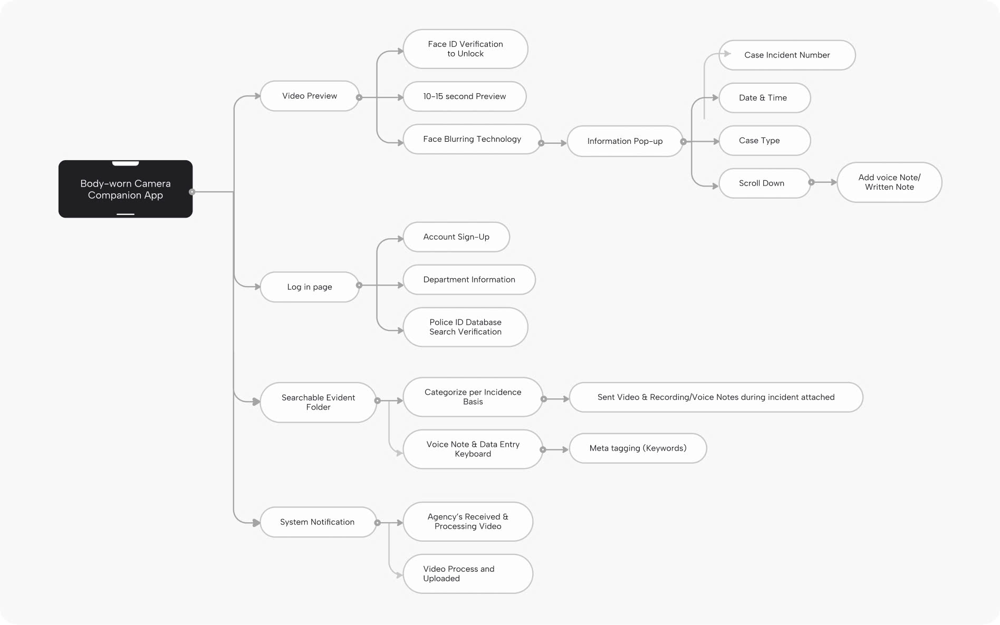
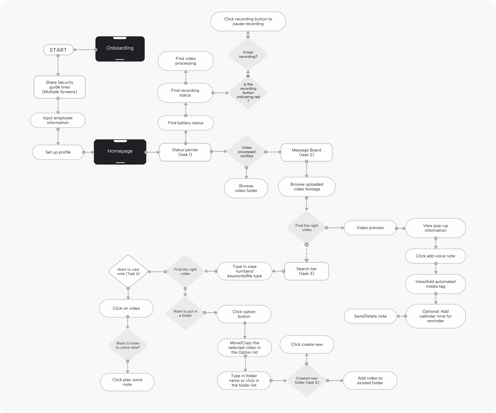
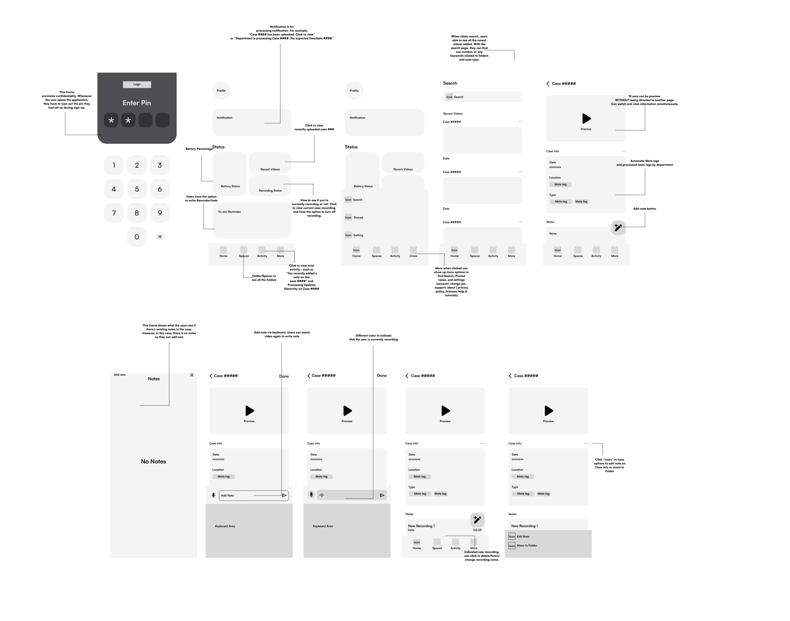
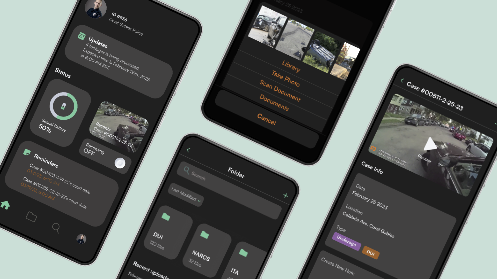
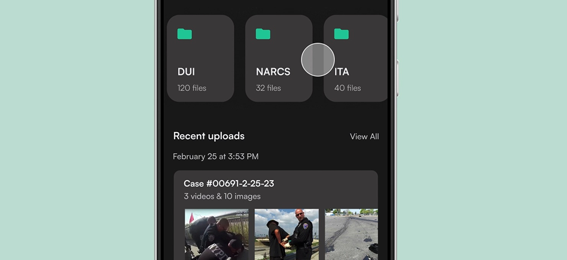
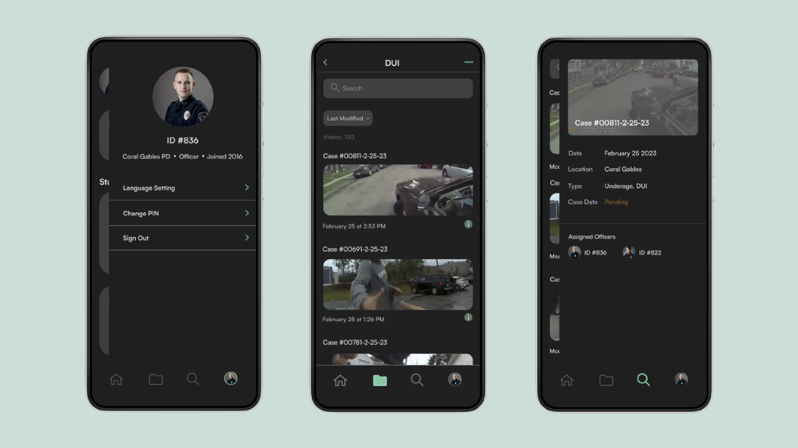

25.7734° N, 80.1902° W
Body-worn cameras are vital for accountability, but the sheer volume of video creates a complex burden: officers spend hours tagging footage, struggle with secure storage, and face retrieval delays. SequelMini simplifies these challenges, making footage accessible and secure, vital for transparency and efficient evidence handling. This empowers more effective and accountable law enforcement.
This innovative solution embodies our commitment to revolutionizing Bodycams. It addresses the ongoing discourse surrounding the benefits, trade-offs, and ethical considerations associated with these devices. By placing user experience at the forefront, we strive to enhance the tools that empower law enforcement professionals in their vital daily duties.
Leading design and art direction, I defined the app's visual identity and user experience, resulting in a consistently engaging and intuitive interface.
2
3 months
UX/UI Designer
By leveraging user research, including interviews, surveys, and usability testing, I ensured data-driven design decisions.
We designed three core features to enhance bodycam footage management: a searchable folder page, user functions for viewing and uploading media to individual cases, and acentral hub for monitoring updates on processed footage.
To visualize these requirements, we initiated the creation of our concept map. As we envision Sequelmini, our dedication is to craft a user-friendly and well-structured application tailored to the unique needs of law enforcement. Our primary objective is to enhance accountability and provide an invaluable tool for the swift management and distribution of information.
Utilizing task flows helped me in strategically identifying the user tasks to replicate within my prototype. The chart emphasized three pivotal actions: viewing recently processed footage, adding a voice note and media files, and creating a new folder.
Utilizing task flows helped me in strategically identifying the user tasks to replicate within my prototype. The chart emphasized three pivotal actions: viewing recently processed footage, adding a voice note and media files, and creating a new folder.
To initiate our design thinking process, we’ve developed low-fidelity wireframes that encapsulate our vision for Sequelmini: an intuitive, well- structured application tailored for law enforcement. This tool is designed to enhance accountability and serve as an indispensable organizational aid for the efficient dissemination of information in various cases.
“For this project, conducting user testing was not included in our scope. Therefore, we are designing based on our best judgment. Nonetheless, we recognize that the true potential of the project will only be fully realized through testing.
In a landscape characterized by a multitude of viewpoints and debates regarding bodycams, encompassing their merits, limitations, and ethical implications, SequelMini represents a pioneering response. Our application serves to navigate this intricate terrain by elevating the functionality of body-worn cameras, ultimately fostering more effective, accountable, and responsible law enforcement practices.
To access the app, users are required to input their security PIN. This ensures confidentiality, a vital necessity for members of law enforcement due to the nature of their profession.
The app enable users to record their notes, which proves particularly valuable for cases with extensive information. This recording feature facilitates the transcription of notes for documentation and paperwork needs.
Ensuring easy accessibility by implementing a scroll for the media upload feature is crucial. This highlights the significance of accompanying media in conveying essential case information.
The app permits users to include customized metatags for their case information. These metatags enhance communication and also improve the searchability of the content.
However, users are not permitted to alter the date, location, or video content generated by the processing department.
Other features encompass a quick case overview, folder view, and user profile display.
This project addresses a major societal issue by fostering trust between law enforcement and the public through seamless design integration into existing procedures.
As a UX/UI Designer, I am driven by the goal of using design for positive impact. This project aligns with my vision of leveraging design to create meaningful societal change.
The goal is to conduct thorough user testing, refine the design based on feedback, and deliver a final product that makes a real impact.